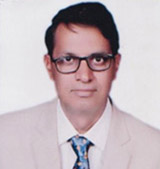

Director of Research

Dr. B. V. Shivaprakash
Director of Research
| Designation and address : | Director of Research |
| Qualifications | M. V. Sc., Ph.D. |
| Contact : | Office : Directorate of Research |
| Fields(s) of specialization | Veterinary surgery and Radiology |
Current Projects
Monitoring all the research projects of the University as Director of Research
Project title |
Role in the project |
Fund outlay |
Funding agency |
Livestock activities in Chickaballapur, Dharwad and Bidar districts |
Nodal officer |
32.05 lakh |
ICRISAT, Hyderabad |
Completed Projects
Project title |
Role in the project |
Fund outlay |
Funding agency |
Experiential Learning Unit on Critical Care in animals |
Nodal |
98.00 lakh |
ICAR |
Recent Research Publications
Sl.No |
Author(s) |
Title |
Name of Journal |
Volume |
Page |
Year |
1 |
B.R. Balappanavar., |
Combination of urethrotomy, urinary bladder repair, tube cystostomy in clinical cases of urethral obstruction in bullocks |
International J. Advance research ideas and innovations in technology |
3(4) |
125-130 |
2017 |
2 |
Manjunath patil., |
Locking compression plating for surgical repair of diaphyseal femoral fracture in dogs |
Intas Polivet |
8(1) |
134-137 |
2017 |
3 |
Manjunath Patil., |
Physiological and biochemical changes during repair of femur fracture in dogs. |
The Pharma Innovation J. |
6(8) |
381-385 |
2017 |
4 |
Arunkumar, S., |
Clinical and physiological evaluation of dexmedetomidine, xylazine and triflupromazine as preanaesthetics with propofolisoflurane anaesthesia for various surgeries in dogs |
The Pharma Innovation J |
6(8) |
100-105 |
2017 |
5 |
Arunkumar S. |
Comparision of right flank and ventral midline approach for ovariohysterectomy in dogs |
Journal of entomology and zoologystudies |
5(6)
|
2411-2416 |
2017 |
Honours & Awards
S.No |
Name of Award |
Awarding Agency |
Year |
1 |
Dr. Bhaskar Singh award( paper in orthopaedics) |
Indian vet. Association |
1998 |
2 |
Smt. Ramani Ramachandran memorial award (paper on Cancer research) |
Indian vet. Association |
1998 |
3 |
Best Veterinarian award |
Karnataka Veterinary Association |
2003 |
4 |
Fellow award |
Indian Society for Veterinary Surgery |
2009 |
5 |
Ruminant Surgery Award/Gold Medal |
Indian society for veterinary surgery |
2008 |
6 |
Dr.A.K.Bhargava Award |
Indian Society for Veterinary Surgery |
2009 |
7 |
Gold medal award, Orthopaedic |
Indian Society for Veterinary Surgery |
2017 |
Others Achievements
- Performed large number of surgeries especially in large animals with very high survival rate and designed many innovative surgical techniques.
- Served as chairman and member for many committees of the university.
- Served as selection committee member for recruitment of faculty of different Universities such as Telengana Vet. University, TANUVAS, Chennai, Vet. University, Madhyapradesh, MAFSU, Nagpur.
- Served as member, VCI Inspection team for recognition of many veterinary colleges
- Developed the Department of Surgery and Radiology as founder Senior faculty since 1992, and as Head of the Dept,
- Contributed for the development of Veterinary college, Bidar as Dean during 2015 to 2017.
- Organized many short term training courses on Large animal Surgery, orthopaedic surgery and X-ray techniques as course Director.